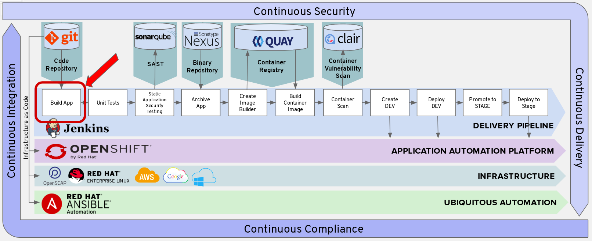
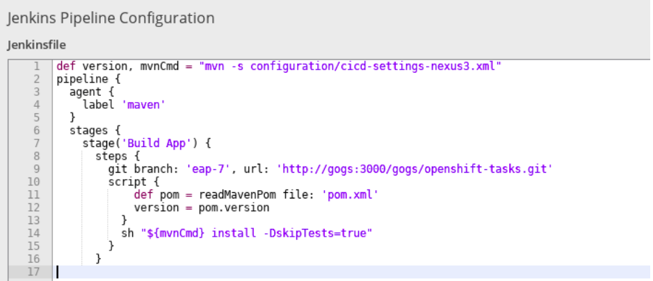
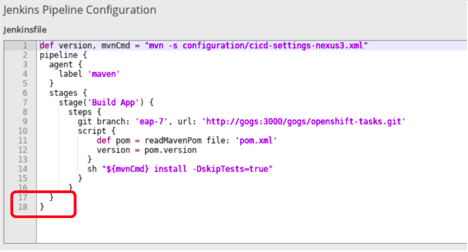
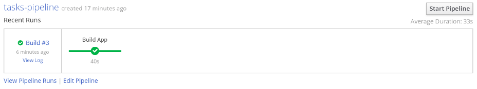
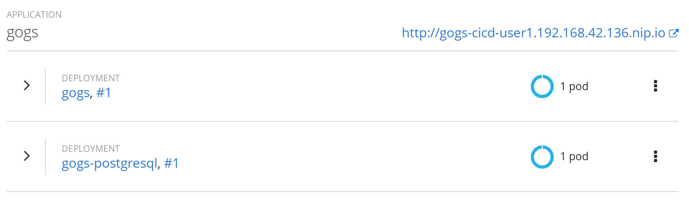
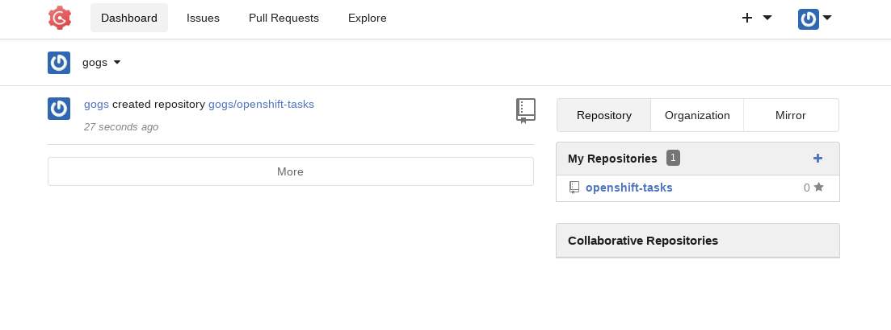

Add Build App Stage to Pipeline Text File
Next, you will add the Build App Stage to your pipeline.

The git branch step will clone the openshift-tasks project with the git branch locally from your gogs server to your jenkins node. The jenkins node is leveraging the git jenkins plugin to communicate to gogs.
Please note that we are leveraging the eap-7 branch in our git project and not the master branch.
Append to Jenkins Pipeline Configuration
In Builds > Pipelines > tasks-pipeline > Actions > Edit

Append the text below to the bottom of the Jenkins Pipeline Configuration. Please make sure to append to the beginning of the next line.
stages {
stage('Build App') {
steps {
git branch: 'eap-7', url: 'http://gogs:3000/gogs/openshift-tasks.git'
script {
def pom = readMavenPom file: 'pom.xml'
version = pom.version
}
sh "${mvnCmd} install -DskipTests=true"
}
}
Your Jenkinsfile should look like this.

Test Your Pipeline
If you'd like to do a test of first pipeline stage, add the following brackets at the end of your Jenkinsfile. Make sure to append to the beginning of the last line.
}
}
Your Jenkinsfile should look like this

Click Save
Go back to Builds > Pipelines
Click Start Pipeline
You should see your first stage run successfully.

Delete Brackets
Please delete the brackets you just added once testing is complete. We can add them later if you'd like to test your pipeline as you go along.
}
}
Click Save
View Source Code in Gogs
View your gogs pod and click select the route (https://gogs...) to log into your gogs server.
Use the user name and password given to you by your instructor.

View the source of the openshift-tasks project in your gogs server.

Maven
Maven install will run through the Maven lifecycle and skip the tests. We will execute tests later in the pipeline.
- validate - validate the project is correct and all necessary information is available
- compile - compile the source code of the project
- test - test the compiled source code using a suitable unit testing framework. These tests should not require the code be packaged or deployed
- package - take the compiled code and package it in its distributable format, such as a JAR.
- verify - run any checks on results of integration tests to ensure quality criteria are met
- install - install the package into the local repository, for use as a dependency in other projects locally
- deploy - done in the build environment, copies the final package to the remote repository for sharing with other developers and projects.